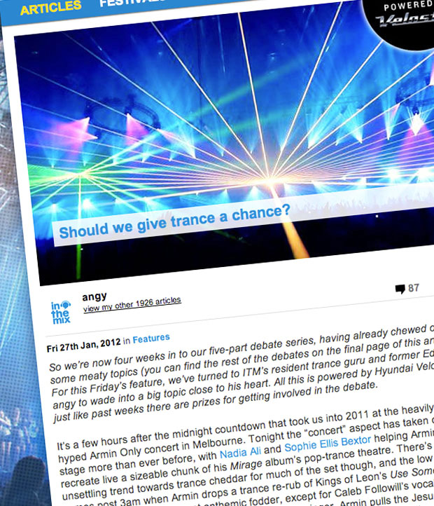

Should we give trance a chance?
{kind=link}

So we’re now four weeks in to our five-part debate series, having already chewed over some meaty topics (you can find the rest of the debates on the final page of this article). For this Friday’s feature, we’ve turned to ITM’s resident trance guru and former Editor angy to wade into a big topic close to his heart. All this is powered by Hyundai Veloster, just like past weeks there are prizes for getting involved in the debate.
It’s a few hours after the midnight countdown that took us into 2011 at the heavily hyped Armin Only concert in Melbourne. Tonight the “concert” aspect has taken centre stage more than ever before, with Nadia Ali and Sophie Ellis Bextor helping Armin recreate live a sizeable chunk of his Mirage album’s pop-trance theatre. There’s an unsettling trend towards trance cheddar for much of the set though, and the low point comes post 3am when Armin drops a trance re-rub of Kings of Leon’s Use Somebody – which would have been great anthemic fodder, except for Caleb Followill’s vocals being replaced with those of a sickly sweet female trance singer. Armin pulls the Jesus pose gratuitously during the breakdown, the crowd sings along raucously, and I die a little inside.
It’s moments like these that offer fuel to the detractors, who insist we certainly shouldn’t give trance a chance. Why the hell would we? It’s a genre dominated by cheesy female vocals, formulaic breakdowns and generic build-ups, defined by a crowd reaching for the lasers as they chase chemically-induced highs all night long. Consider this infamous quote from techno stalwart Dave Clarke: “I think all trance DJs deep down are embarrassed by what they play. They take it on the chin! They know deep down that they’re playing watered-down techno.”
It’s a common perception of many from outside the scene, and trance has been the resident whipping boy of dance music for longer than most clubbers can remember, in spite of its enduring popularity. You can trace the sentiments back to shortly after trance’s ‘Golden Year’ of 1999 had passed, when all the explosive energy from the superclubs like Gatecrasher and Cream fizzled out, leaving trance looking like it was desperately seeming to recapture those euphoric highs.
Digging deeper
As always though, there were quality tunes to be found if you go looking in the hidden corners. Even when trance was deep in its post-2001 dead zone, pioneers like M.I.K.E and Marco V were slyly working to inject a techno influence into the sound (what eventually came to be known as ‘tech trance’). ‘Golden Year’ survivor Ferry Corstenwas dropping bombs out of leftfield like Punk and Rock Your Body, Rock, while a new wave of big-league hopefuls like Armin van Buuren and Above & Beyond were cleverly challenging the way we perceived popular club trance. Reflecting the rich tapestry of sounds that defined trance as it emerged in the ‘90s, all sorts of influences began to creep their way in – the strongest were progressive and techno, but there was plenty of representation from house music, electro and beyond.
These developments crystallised in two massive records released in 2007; Rank 1 and Alex M.O.R.P.H.’s Life Less Ordinary and Wippenberg’s remix of Needs To Feel, both which deceptively lulled the listener into a false sense of security via a traditional euphoric breakdown, before slamming them in the face with a chunky electro bassline after the drop. After that the doors were blown open, and trance experienced a true ‘comeback’ year in 2008.
Trance’s clean-cut new mascot Armin van Buuren had just taken the #1 spot in the ‘DJ Mag Top 100’ poll for the first time, reflecting how much demand was still there, but this time the interest was warranted – there’d been an explosion of amazing sounds right across the spectrum. Ferry Corsten’s Twice in A Blue Moon album captured the roaring, eclectic energy that was present at the time, and in 2008 he talked to ITM about the evolution he’d witnessed, and how he’d helped pioneer this shift.
“The sound was just becoming so same-y,” he said. “Everybody as using the same presets, and there was just no adventure anymore. That was really my main reason for starting to experiment with different styles. So it is really good to see now, especially in the past year and a half, there is some really interesting music coming out…it’s stuff that still belongs in the trance genre, just more open-minded.”
Holland’s Sander van Doorn was another DJ/producer who came to represent the so-called ‘nu-trance’ sound, as an artist who was always interested in pushing down the genre boundaries, experimenting and introducing new aesthetics. That year he’d dropped the monstrous Riff, which came to epitomise what could be achieved when fusing trance with pumping techno.
“There was a big shift a couple of years ago when a lot of trance producers all of a sudden ‘saw the light’, and tried to combine different genres into a blend,” Sander told ITM in early 2009. “Last year was a big peak, with a lot of producers opening their eyes that you can produce a melodic track with a lot of feeling, but maybe at a slower pace. This made trance expand into a lot more interesting style of music, and I think it will keep on progressing.”
Slinking back in the other direction
Unfortunately though, it didn’t keep progressing as much as fans would have liked, and several years down the track it’s as hard as it’s ever been to argue that trance should be given a chance. The slide back in the other direction was something that Ferry Corsten picked up on fairly quickly in 2009.
“A year ago I was really saying, ‘Hey man, trance is the new sound again’,” he said. “What I do notice again now, and it was the same thing a couple of years ago when trance went all over the top, again a lot of stuff is getting very same-y. Everybody is using that same ‘dikka dikka dikka’ sound,” referring to the techy presets that had become ubiquitous. “I’d rather see a new guy breaking through with a new kind of sound where everybody is like, ‘oh my god, this is awesome’. If we’re starting to think a year down the road that we’re hearing the same kind of stuff, then maybe it’s time for something new.”
Blowing up big again had turned out to be trance’s undoing, something that next-gen producer Sean Tyas captured pretty well in an interview late last year with the LA Examiner, insisting trance needs to return to the underground to find redemption again. “That’s what trance needs to be, trance need to be underground. Once it’s mainstream, it’s all fucked up. There are too many vocals, too many mainstream remixes, and we’re all guilty of it. It’ll be better if it comes back slowly and underground.”
Of course, you’re never going to draw Armin van Buuren on any shortcomings in his beloved scene; depending on how your see it, he’s either choosing to focus on what isactually working, or otherwise he’s being positive to the point of stretching credibility.
“Of course there are times when the music appeals to me more than other times,” he told 3D World shortly before his ‘Armin Only’ NYE gig in Melbourne. However, that’s the most you’d get out of him. “You can really see it’s alive and bigger than ever. Truly, I’ve never sold this many albums before. I don’t really understand why people expect trance to die, or fall in popularity. It’s just amazing to see all those different sounds develop and emerge. Trance continues to change, and it feels the influence of any other style that’s popular… And I don’t really believe there’s been a weak period in trance.”
On the other end of the spectrum though, you have the phenomenon of DJ/producers openly attacking their own brethren. John 00 Fleming in particular has been the grumpy old grandpa of trance for many a year now. “I think the meaning of trance has got lost in translation in the past few years, it doesn’t all have to come from a candy shop,” he said in his heralded Essential Mix in 2010, which for many represented the underground side of trance that was otherwise rarely heard. And then there was the epic tirade that John Askew leveled on the scene last year.
“I play the music I have always been into. And so does John ‘00’ Fleming. He’s one of the few genuine people in this viper’s nest of cunts that has his integrity intact,” Askew told ITM. His main point of contention was related to the creative compromises he viewed DJ/producers to be making as they sought to scale the ladder towards fame. “The attraction of making more money and getting a higher position in the DJ Mag Top 100 is a seductive prospect for a lot of impressionable young DJ/producers and I entirely sympathise with those who get sucked into it, but I’m not impressionable.”
Social networking had been giving him the shits, too. “I have also cut away all unnecessary and hugely time consuming online self masturbation that seems to have become so essential for those who care about ‘working their way up the ladder’.”
Anyone who’s ‘liked’ any of the trance brigade on Facebook might concede that Askew has a point, as there’s more fan-building social networking campaigns than you could poke a stick at. US act Tritonal are among the worst offenders in this regard, urging their followers to unite as #Tritonians to vote for their tracks in radio show web votes, and transforming their new album into a convenient hashtag with #piercingthequiet.
What all the trance bashing ignores though is that there hasn’t been a point where there wasn’t something inspiring happening. Putting his money where his mouth is, John ‘00’ Fleming has pushed the limits of the deeper side of progressive trance over the past few years, while John Askew has displayed similar determination, recently moving on from his post at Discover Records and relocating to Perfecto Records, joining forces with Paul Oakenfold, who appears to have refreshed his commitment to quality trance. And in the big end of town, Above & Beyond have proved incredibly consistent with recruiting excellent new cutting-edge talent to their Anjunabeats label, bringing the likes of Mat Zo, Arty and Andrew Bayer to the world in recent times.
One of the most exciting developments last year was the increasing presence of those intricate, rolling rhythms we’ve come to associate with tech house, as well as a bottom-heavy rumble underneath the melodies that has sent more bass reverberating through the venues than trance fans have ever heard before. The development was cheekily referred to as ‘Trance 2.0’ by Above and Beyond when they were introducing their award winning Essential Mix last year; “The new groove-driven variant of our core sound.” However, Tony McGuiness conceded to ITM the comment was a little presumptuous when Above & Beyond toured in September last year.
“If you think about it, it started in maybe ’92 with the old Esperanza sound, and it’s been through so many incarnations, if we’re on anything in that limited number we’re at least ‘9.0’, if not trance 2 million, 700 thousand and 56,” Tony said. “Because really, it evolves a record at a time. It’s not like there’s a memo that goes out that says, ‘Okay this week’s tempo is 134, and a little bit bassline’. It just happens naturally. Over the last three years, basslines have started to get a little more adventurous…tempos have come down, and there’s more elements from other music.”
Finding redemption
“All units stand by. Prepare for transmission. Set frequencies. Connecting global audience.” These grandiose words rang out across the world last April, with the five live broadcasts to mark the 500th episode of Armin van Buuren’s already hugely successfulA State of Trance radio show. It was a marketing triumph for Armin and the Armada Records juggernaut; the broadcasts were listened to by tens of millions, the sets ripped and distributed enthusiastically, with five massive parties taking place across Johannesburg, Miami, Buenos Aires and Dutch city Den Bosch.
The climactic event of ASOT 500 descended on Sydney’s Acer Arena on a Saturday night, with Armin hitting the stage for a climactic three-hour set to wrap up the five-week extravaganza, which both emphasised how far he’s moved towards a widely accessible sound, as well as demonstrating what an utterly untouchable showman he really is.
Beginning with a familiar hit of the vocal melodrama we’ve come to expect from Armin, even here the execution was flawless, with the crowd gasping as he dropped into a deep, progressive patch around 30 minutes in that reminded he’s always been about more than back-to-back anthems. As the tempo rose again, Armin could be seen bouncing around the stage and dancing with wild abandon, with an infectious energy and charisma that reverberated throughout the arena.
It was a perfectly-mixed home run of trance anthems, vocal mash-ups as well as plenty of unexpected moments, including a blinding hit of pumping tech trance in the final hour that walloped the loving crowd right across the face. He didn’t lose the crowd’s attention for a second, and even if Armin’s transformation into a Guetta-style commercial powerhouse is nearly complete – he’s done it with crowd-pleasing panache that you just can’t fault.
While there were moments at ‘Armin Only’ on New Year’s Eve in Melbourne that nearly convinced me to retire my sweaty trance pants, the stripped-back DJ set that Armin delivered at ASOT500 reminded me why it’s well worth sticking it out. It’s true, those saccharine lows might be embarrassing, and the formulas are done to death; US veteran Christopher Lawrence summed it up fairly well. “Bad trance is based on obvious melodies, cheesy lyrics, has no soul and leaves you feeling ashamed like a bad one night stand.” The highs, though, are exhilarating: “Good trance draws you in and takes you to another place. Good trance moves your body, engages your mind and touches your soul.”
Trance fans will know that feeling when you’re locked in the journey of a marathon trance set; relishing the darker moments, hypnotised by the driving records, or swept up in those euphoric build-ups when they hit at just the right time. Most importantly though, there’s nothing that will ever match the crackling, euphoric energy you feel in a room of roaring trance fans. There’s no question: you should definitely give trance a chance.